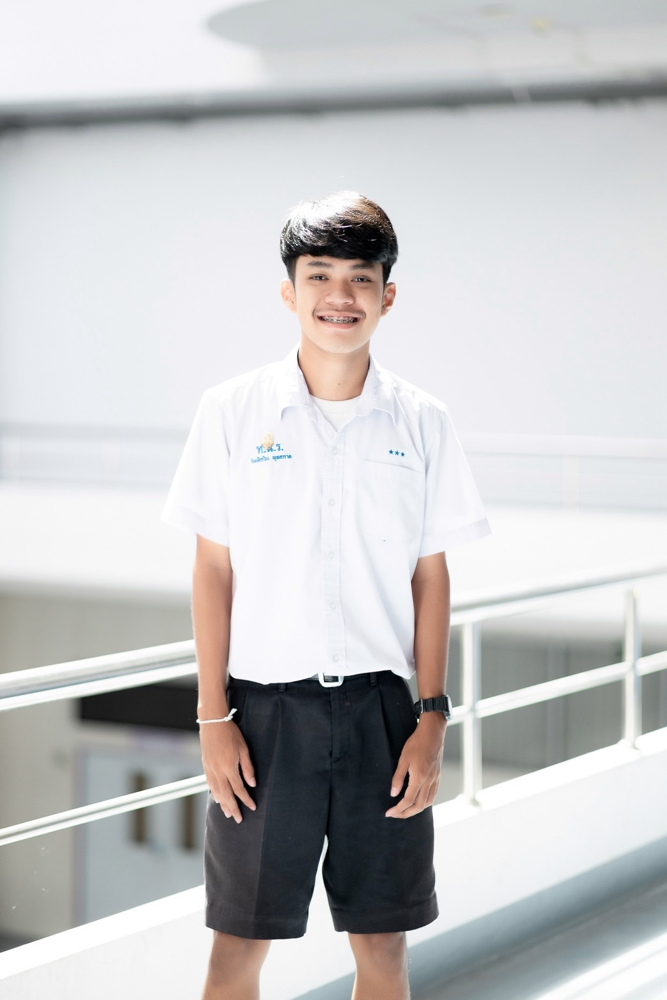
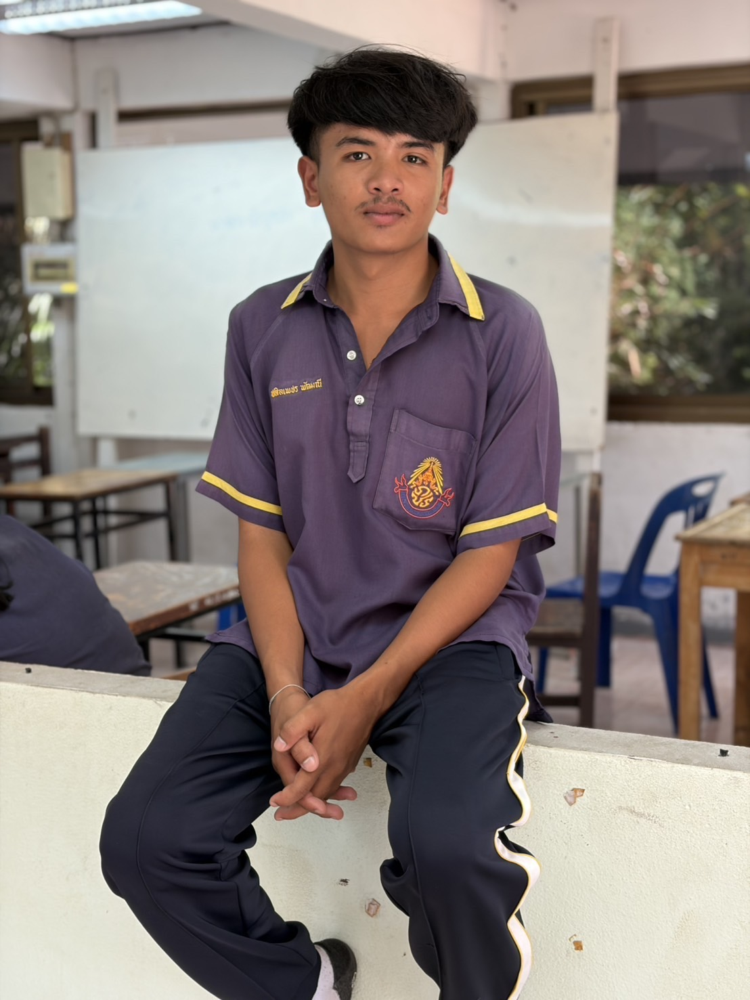

นายกิตติกวิน พุทธกาล
Kittikawin Phutthakan
ผู้สมัคร
Kittikawin Phutthakan
ผู้สมัคร
แฟ้มสะสมผลงาน
ผู้ร่วมจัดทำเว็บไซต์หมายเหตุ: เว็บไซต์นี้แสดงเฉพาะข้อมูลที่เหมาะสำหรับเผยแพร่ในแฟ้มสะสมผลงาน โดยไม่แสดงเลขประจำตัวประชาชน ที่อยู่ เบอร์โทรศัพท์ หรือข้อมูลผู้ปกครอง
โรงเรียน: ทุ่งใหญ่เฉลิมราชอนุสรณ์ รัชมังคลาภิเษก จังหวัดนครศรีธรรมราช
หลักสูตร: หลักสูตรแกนกลาง (สามัญ) · ปีการศึกษา 2569
GPAX 4 ภาคเรียน: 3.06
“หมวด 4.1 · รางวัล / เกียรติบัตร
การแข่งขันอัจฉริยะทางธุรกิจ
รางวัลระดับเหรียญเงินวันที่: 12–13 มกราคม 2569
เข้าร่วมการแข่งขันอัจฉริยะทางธุรกิจ ระดับชั้น ม.4–ม.6 เป็นครั้งแรก และตั้งใจทบทวนเตรียมตัวอย่างต่อเนื่องจนได้รับรางวัลระดับเหรียญเงิน ประสบการณ์นี้ทำให้เรียนรู้ว่าความสำเร็จเกิดจากความตั้งใจและการเตรียมตัวอย่างสม่ำเสมอ
การประกวดโครงงานคุณธรรม
เหรียญทอง รองชนะเลิศอันดับ 1วันที่: 12–13 มกราคม 2569
รับหน้าที่เป็นผู้นำเสนอผลงานได้พัฒนาทักษะการสื่อสารการพูดต่อหน้าสาธารณชนการตอบข้อซักถามการทำงานเป็นทีมและการแก้ไขปัญหาเฉพาะหน้า
หมวด 4.3 · กิจกรรม
1. กิจกรรมปลูกป่าชายเลน
ปี: 2568
ได้รับเลือกเป็นคณะกรรมการนักเรียน มีส่วนร่วมคิดและดำเนินนโยบาย เช่น โบว์กิ๊ฟติดผมนักเรียนและปกสมุดโรงเรียน รวมถึงร่วมจัดกิจกรรมและจำหน่ายสินค้า ฝึกการวางแผน ประสานงาน และแก้ไขปัญหา
2. ขายของในงานกีฬาสานสัมพันธ์
วันที่: 25 ธันวาคม 2568
เป็นตัวแทนจำหน่ายลูกชิ้นและน้ำ มีส่วนร่วมเตรียมสินค้า จัดร้าน ขายและบริการลูกค้า ฝึกสังเกตความต้องการและปรับแผนเมื่อสินค้าไม่เพียงพอ
3. กิจกรรมมอบหมวก
วันที่: 30 ธันวาคม 2568
ร่วมจัดตลาดวันปีใหม่ในนามสภานักเรียน รับหน้าที่ขายปูนพลาสเตอร์ ช่วยเตรียมและประชาสัมพันธ์สินค้า จนขายหมดและได้กำไรตามเป้าหมาย
4. ร่วมทำบุญเนื่องในวันธรรมสวนะ
วันที่: 20 มิถุนายน 2569
ร่วมเปิดร้านขายขนมจาก ลูกชิ้นนึ่ง และน้ำเปล่า ได้ฝึกสื่อสารกับลูกค้าที่หลากหลายและเรียนรู้การขายในสถานการณ์จริง
5. เป็นประธานสี
วันที่: 20–22 มีนาคม 2569
เข้าร่วมค่ายเพื่อพัฒนาทักษะความเป็นผู้นำ การทำงานร่วมกับผู้อื่น การสื่อสาร และการแก้ไขปัญหาเฉพาะหน้า
6. กิจกรรมจิตอาสาพัฒนาชุมชน
วันที่: 15–16 พฤศจิกายน 2568
เรียนรู้การค้นหาตัวตนผ่านกิจกรรมและการทำงานกลุ่ม ฝึกสื่อสาร รับฟังความคิดเห็น และเข้าใจจุดแข็งของตนเอง
7. วิทยากรร่วมอบรมค่ายคุณธรรม
วันที่: 23 มิถุนายน 2569
ทำหน้าที่พี่ประจำกลุ่ม พาน้อง ๆ เข้าร่วมกิจกรรม สาธิตเกม อธิบายกติกา และช่วยเหลือระหว่างกิจกรรม ฝึกปรับวิธีสื่อสารให้เหมาะกับแต่ละคน
8. แข่งขัยจรวดขวดน้ำ
ปี: 2568
มีส่วนร่วมวางแผนและจัดเตรียมกิจกรรมของคณะสี ประสานงานกับสมาชิก และดูแลงานที่ได้รับมอบหมาย
9. ฝึกงาน ณ สำนักงานส่งเสริมการปกครองท้องถิ่น
ปี: 2569
ปฏิบัติหน้าที่ตัวแทนถือป้ายโรงเรียนและส่งมอบเหรียญรางวัลแก่นักกีฬา เรียนรู้การเตรียมตัวและรักษาความพร้อมตามเวลาที่กำหนด
10. ตัวแทนนักเรียนต้อนรับรองผู้อำนวยการโรงเรียน
วันที่: 10 กรกฎาคม 2569
เป็นตัวแทนถือป้ายคำขวัญโรงเรียนในขบวนต้อนรับ ฝึกความมั่นใจและการวางตัวในฐานะตัวแทนของโรงเรียน
11. ตัวแทนนักเรียนต้อนรับผู้อำนวยการสำนักงานเขตพื้นที่ฯ
ปี: พฤศจิกายน 2568
ได้รับเลือกเป็นตัวแทนนักเรียนชั้น ม.5 ในการยืนต้อนรับ ฝึกความรับผิดชอบ บุคลิกภาพ และการปฏิบัติหน้าที่ในฐานะตัวแทนนักเรียน
12. ตัวแทนสภาร่วมดำเนินกิจกรรมวันอาเซียน
ปี: สิงหาคม 2569
ช่วยถือธงและร่วมจัดตลาดวันอาเซียน มีส่วนร่วมเตรียมงานและดำเนินกิจกรรม ฝึกการออกแบบกิจกรรมให้ตอบโจทย์ผู้เข้าร่วมและทำงานร่วมกับผู้อื่น
หมวด 4.4 · การอบรม / การเรียนเพิ่มทักษะ
การฝึกงานธนาคาร ธ.ก.ส.
วันที่: 9–13 มีนาคม 2569
ฝึกงานที่ธนาคารเพื่อการเกษตรและสหกรณ์การเกษตร สาขาถ้ำพรรณรา ได้เรียนรู้การทำงานจริง ช่วยจัดเรียงเอกสารและแฟ้มข้อมูล ตรวจสอบและสรุปยอดเงินเบี้ยยังชีพผู้สูงอายุ ต้อนรับผู้ใช้บริการ และช่วยผู้สูงอายุกดบัตรคิว
อบรมชมรม TO BE NUMBER ONE
วันที่: 10–12 มิถุนายน 2569
เข้าร่วมอบรมโครงการรณรงค์ป้องกันและแก้ไขปัญหายาเสพติด กิจกรรมสร้างเครือข่าย “ศูนย์เพื่อนใจ TO BE NUMBER ONE” ในฐานะสมาชิกชมรมและเหรัญญิก เรียนรู้การป้องกันปัญหายาเสพติดและการทำงานร่วมกับผู้อื่น
หมวด 4.5 · ผลงานสร้างสรรค์
การคิดและตัดต่อ MV
ช่วงเวลา: มกราคม 2568
เป็นผู้คิดและวางโครงเรื่อง MV ตั้งแต่เริ่มต้น กำหนดแนวทางและลำดับการดำเนินเรื่อง รวมถึงรับผิดชอบการตัดต่อและเรียบเรียงวิดีโอให้มีความต่อเนื่อง โดยทำงานร่วมกับเพื่อน ๆ ที่รับหน้าที่แสดง
ลิงก์ผลงาน: รับชมผลงาน MV
''' (base / "index.html").write_text(html, encoding="utf-8") zip_path = Path("/mnt/data/TCASFOLIO_website_with_photos.zip") with ZipFile(zip_path, "w", ZIP_DEFLATED) as z: for p in base.iterdir(): z.write(p, arcname=p.name) html_path = Path("/mnt/data/index.html") html_path.write_text(html, encoding="utf-8") print("สร้างไฟล์เว็บไซต์และแพ็กเกจพร้อมรูปภาพแล้ว") print(f"HTML: {html_path}") print(f"ZIP: {zip_path}") ติดต่อ
ขอบพระคุณคณะกรรมการที่ให้ความสนใจแฟ้มสะสมผลงาน
สามารถเพิ่มช่องทางติดต่อที่ต้องการเผยแพร่ได้ในส่วนนี้